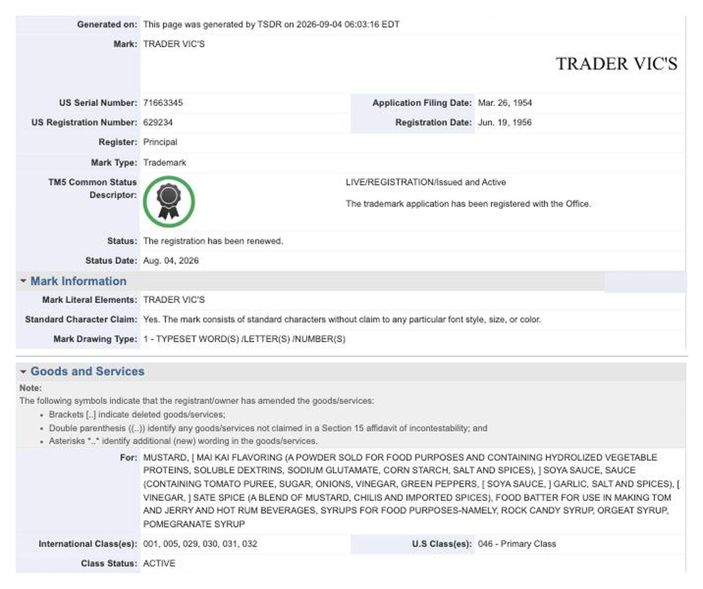

The Man Who Sold the Island
Donn Beach invented the tiki bar. Victor Bergeron invented the business, and somewhere in the middle of it he built the Mai Tai. This is the story of Trader Vic, and why the 1944 on our menu carries a date instead of a name.
On 17 November 1934, a 31-year-old from San Francisco borrowed five hundred dollars and opened a one-room beer parlour on San Pablo Avenue at 65th Street, in Oakland, directly across the road from a bar his uncle already ran. He called it Hinky Dink's. There was nothing tropical about it. The room was done out like a hunting lodge, the walls carried trophies, and the drinks were what anyone in Oakland was drinking that year. His name was Victor Jules Bergeron, and he had lost his left leg at the age of six — tuberculosis of the knee, amputated to save his life. Customers who worked up the nerve to ask were seldom given the medical version. They usually got a shark.
Three years later two trips rearranged him. He went to Cuba to learn what a bartender was supposed to know, and he went to Hollywood to see what Donn Beach had built. He came home, pulled out the hunting lodge, hung the room with nets and carvings and thatch, and gave the place a new name and himself a new character: a hard-bargaining South Seas trader, back from the islands with a limp and a story. He had never traded anything. The persona arrived some years before the drinks did, and it never once slipped.
The 1944
The drink came ten years into the act. Bergeron was behind the service bar in Oakland and reached for a bottle of seventeen-year-old J. Wray & Nephew Jamaican rum — surprisingly golden for its age, medium-bodied, carrying that pungent Jamaican weight he wanted to build around rather than hide. He added the juice of a fresh lime, half an ounce of orange curaçao, half an ounce of French orgeat, and a quarter ounce of rock candy syrup. That is the whole drink. No pineapple. No grenadine. No dark tide of fruit juice of the kind that would later be poured over it in a thousand hotel lobbies.
Two friends were in that night, Eastham and Carrie Guild, visiting from Tahiti. Carrie tasted it and said "maita'i roa a'e" — Tahitian, roughly out of this world, the best of them. Bergeron kept the first two syllables and had a name. It is worth saying plainly: he built the drink, and a Tahitian woman named it, and the name is the half that travelled.
Donn Beach never accepted any of this. He maintained to the end that the Mai Tai descended from a drink of his own, made a decade earlier, and that Bergeron had simply rebuilt it and given it a better name. The two men were competitors for forty years and, by most accounts, on perfectly civil terms about everything except this. Bergeron's answer went into his own bartender's guide, in print, where it has sat ever since.
"Anybody who says I didn't create this drink is a dirty stinker."Victor Bergeron, Trader Vic's Bartender's Guide
The rum settled the argument in a way neither of them intended. That seventeen-year-old Wray & Nephew was a finite thing, and Bergeron drank his way through the world's supply. By the 1950s he was blending younger Jamaicans to chase a flavour that no longer existed, which means the original Mai Tai has been unreproducible for roughly seventy years — and that every bar claiming to serve the real one, including this one, is really serving an argument about what it tasted like. Ours is on the menu as the 1944: aged Jamaican rum, orange liqueur, lime, and orgeat we make here from toasted sticky rice instead of almonds. The rice is the one deliberate lie. Everything else is an attempt at the truth.
The empire, and what it cost
Here is where the two founders part company for good. Donn Beach hoarded. He bottled his syrups under codes so his own bartenders could not carry the recipes out of the building, and when he died a number of his drinks went with him until historians spent years decoding the notebooks. Bergeron did the exact opposite. He published. He wrote nine books, printed his recipes, licensed his name into Hilton hotels, and let the room be reproduced anywhere a lobby had the square footage. Tiki went worldwide because one of its two inventors was willing to franchise it.
That is also what nearly finished it. A drink built on a seventeen-year-old rum does not survive contact with a chain: it gets a mix, a bottled sour, a wedge of tinned pineapple and a paper parasol, and by the 1970s the Mai Tai was a punchline in the very hotels that had carried it around the planet. The thing that saved tiki from dying in the 1960s is the same thing that made it embarrassing by the 1980s. Both halves of that are Bergeron's, and it seems dishonest to take one without the other.

- Record
- United States Patent and Trademark Office, Trademark Status & Document Retrieval. Mark TRADER VIC'S, serial 71663345, registration 629234 · filed 26 March 1954, registered 19 June 1956, Principal Register.
- Status
- Live and active, renewed five times, most recently 4 August 2026. Current owner of record NUBECO, LLC, Martinez, California. Retrieved 4 September 2026.
- Rights
- Public domain. A record of the United States government, which carries no copyright. The mark itself remains the property of its owner and is reproduced here only to report on it. We are not affiliated with Trader Vic's and claim no connection. Look the record up yourself.
He died in 1984. The company outlived him and still runs about seventeen restaurants — a few in the United States, one in Europe, most of them in the Middle East, and two in Asia. The nearest one to this bar is in Bangkok, opened in 1992, roughly an hour's flight from the door you came in through. We have no connection to it of any kind, and we will never suggest otherwise. That registration above was renewed for the fifth time on 4 August 2026, one month before this was written: a live mark, still tended by lawyers, seventy-two years after it was filed and forty-two after the man died. It is not ours, and that is precisely why our menu lists a year rather than a name: the drink is his, the trademark is theirs, and the only honest way to serve one without borrowing the other is to write the date on the page and tell you the story in here.
Donn Beach invented the island. Victor Bergeron drew the map, printed it, and sold it in the lobby of every hotel that would have him. You can hold both of those thoughts at once, and you should, because they are sitting a page apart in our Book. Order the 1944 and you are drinking the argument.